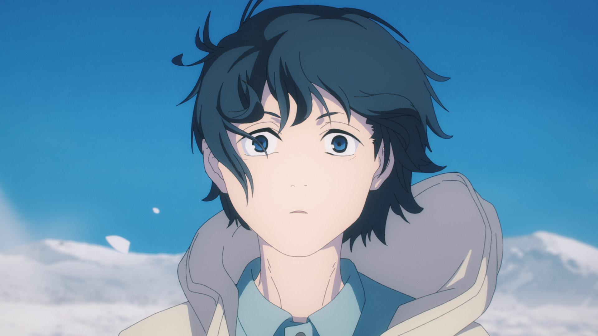

CHAINSAW MAN | EPISODES
| 01
| 02
| 03
| 04
| 05
| 06
| 07
| 08
| 09
| 10
| 11
| 12
EPISODE 01 | DOG AND CHAINSAW
Denji is a boy who lives as a devil hunter. In order to pay off the debts left by his parents, he lived a poor life while fulfilling requests from the yakuza with the "Chainsaw Devil" Pochita. One day, Denji is summoned by a yakuza and is betrayed and killed. In his fading consciousness, there was something that spoke to Denji.
EPISODE 02 | ARRIVAL IN TOKYO
Denji is brought to the Devil Hunter Tokyo Headquarters and is introduced to his senior Aki Hayakawa by Makima. However, Denji is beaten by Hayakawa and told to quit his job.
EPISODE 03 | WHEREABOUT OF NYAKO
"Blood Majin" Power, who has formed a buddy, says that he can rub his chest in exchange for taking back Nyako, the cat he once had, from the devil. Seeing his dream come true in front of him, Denji suddenly gets fired up, but..
EPISODE 04 | RESCUE
After a fierce battle, Denji defeated the "Bat Demon" and saved his power. His purpose was just to "massage the chest". He says, "It's a stupid reason," but he says it makes him feel better. Denji was delighted with that, but--.
EPISODE 05 | GUN DEVIL
Denji starts living together with Aki Hayakawa and Power.
EPISODE 06 | KILL DENJI

Denji and his friends sneaked into the hotel to collect the meat pieces of the gun devil. However, he is trapped on the 8th floor by the power of the devil and is in a predicament.
EPISODE 07 | THE TASTE OF KISS
Aki is stabbed by Kobeni while protecting Denji. Seeing that figure, Denji dives towards the Eternal Devil. Himeno, who stares at her, remembers a certain word.
EPISODE 08 | GUNSHOT
Denji experiences a shocking first kiss.
EPISODE 09 | FROM KYOTO
A fierce battle between Denji and Samurai Sword unfolds. Denji takes Samurai Sword's comrades hostage, but Samurai Sword kills Denji with his comrades.
EPISODE 10 | MORE TATTERED
Public Security Anti-Magic Special Section 4 has lost a large number of personnel due to a series of attacks. Aki Hayakawa wakes up in a hospital bed and cannot accept reality. Around the same time, Makima introduces a certain person as a mentor to Denji and Power in order to strengthen Section 4.
EPISODE 11 | OPERATION START
Denji and power forged on the shore. The samurai sword's hideout is located, and public security counterattacks begin.
EPISODE 12 | JAPANESE SWORD VS CHAINSAW
Hayakawa is about to be killed after having a tough fight with Sawatari, who manipulates ghosts. Around the same time, Denji, who confronts Samurai Sword again, pulls the starter rope on his chest and becomes Chainsaw Man. And so the final battle between Chainsaw Man and Samurai Sword begins.